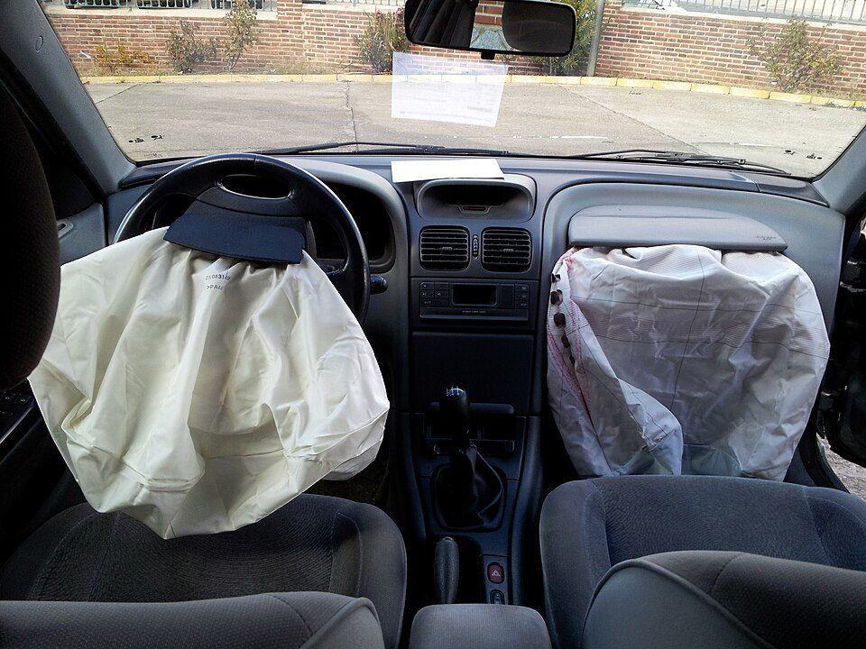
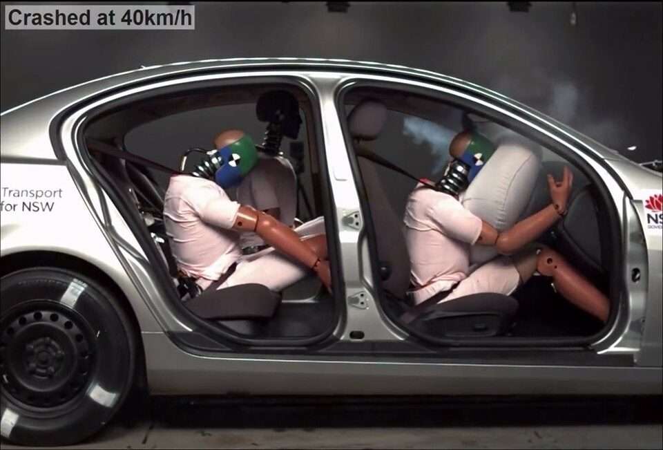

エアバッグはなぜ一瞬で膨らむ？ 仕組みと、正しく効かせるための乗り方
要点まとめ
国土交通省によると、エアバッグは前面衝突のときに瞬時に膨らみ、乗っている人がハンドルやインストルメントパネル（ダッシュボード）に直接ぶつかるのを防いで、頭と胸への衝撃を軽くします[7]。この記事では、エアバッグがなぜ一瞬で膨らむのかを、部品メーカーの説明や火薬の学会誌でたどります。あわせて、エアバッグの効果を生かすためのシートベルトや座り方、子どもの乗せ方、リコールの確かめ方を、国土交通省・警察庁の資料でまとめました。

一瞬で膨らむ仕組み
ダイセルによると、エアバッグは、衝突を感知するセンサー、その信号を受けてエアバッグを作動させるインフレータ（ガス発生器）、風船のように膨らむバッグで構成されています[1]。部品メーカーの日本化薬とダイセルの説明をもとに、膨らむまでの流れを図にしました。
センサーと制御装置が「事故かどうか」を判断する
事故と判断したときだけ、点火装置に電気信号を送る
日本化薬は、車の前の部分に組み込まれた衝突センサーが衝撃を感知し、診断装置が事故による衝撃かどうかを判断して、事故と判断した場合に電気信号を点火装置（スクイブ）に送ると説明しています[2]。ダイセルも、センサーが衝突を感知するとECU（衝突診断回路）に信号が送られ、ECUが衝突と判断すると点火電流が流れる、と説明しています[1]。
火薬を燃やして、ガスを一気に作る
点火器→伝火薬→ガス発生剤の順に火が移り、ガスが出る
ダイセルの説明では、点火器（イニシエータ）が着火すると、伝火薬（エンハンサ）、ガス発生剤の順に火が移ってガスが発生します。そのガスをクーラントでこして冷やし、ノズルから出してバッグを膨らませます[1]。日本化薬も、スクイブの熱でガス発生剤が点火・燃焼し、出てきたガスでエアバッグを膨らませると説明しています[2]。
膨らむまでの時間は「0.05秒程度」
日本化薬は、感知から膨らむまでを0.05秒程度と説明
日本化薬は、衝突センサーが衝撃を感知してから、エアバッグが膨らみ、シートベルトプリテンショナーがベルトを引き込むまでを「0.05秒程度」と説明しています[2]。ダイセルは、点火電流が流れてから「数ミリ秒」でインフレータが作動すると説明しています[1]。国土交通省は、エアバッグが膨らむ速さは時速100〜300kmに達するとしています[7]。膨らむまでの時間について、国などの公的機関が示した数値は見つかりませんでした。
膨らんだあとは、すぐにしぼむ
そのあとに起きる衝突には、効果がない
国土交通省によると、エアバッグは膨らんだあとすぐにしぼむため、そのあとに起きる衝突に対しては効果がありません[7]。膨らむ勢いが強いので、すり傷・打撲・骨折・やけどなどを負う可能性があります[7]。一方、膨らむときに出るガスそのものは、特に有害なものではないとしています[7]。
ガス発生剤と「アジ化ナトリウム」
2001年の学会誌では、主な成分はアジ化ナトリウム
2001年の火薬学会誌の論文は、自動車用エアバッグのガス発生剤には、主にアジ化ナトリウムと酸化剤の混合物が使われていると書いています[9]。同じ論文は、毒性や、重金属との化合物が爆発しやすいことなどから、アジ化ナトリウムを使わないガス発生剤の研究が行われているとしています[9]。アジ化ナトリウムは現在、毒物及び劇物指定令で「毒物」に指定されています（0.1%以下を含むものを除く）[10]。厚生労働省のモデルSDS（安全データシート）にも、用途として「自動車用エアーバッグの推進薬」が挙げられています[11]。
いまのエアバッグのガス発生剤の成分は、日本化薬・ダイセルの公式サイトにも書かれておらず、確認できませんでした。
膨らむ条件と、エアバッグの種類
目安は、時速20〜30km以上の正面衝突
コンクリート壁のような硬い物に、正面からぶつかったとき
国土交通省は、エアバッグが膨らむ条件の目安を、時速20〜30km程度以上の速度でコンクリート壁のような強固な構造物に正面衝突したとき、または自動車などと衝突して同じくらいの衝撃を受けたとき、としています[7]。
衝突しなくても膨らむことも、衝突しても膨らまないことも
膨らむかどうかは、角度・速度・ぶつかる物で変わる
エアバッグは、メーカーが設計で決めた条件で前面衝突したときに膨らむように作られています。そのため、衝突の角度や速度、ぶつかる物によっては膨らまないことがあり、逆に縁石に乗り上げるなどして一定以上の衝撃を感じると、衝突しなくても膨らむことがあります[7]。
| 種類 | 働く場面 | 守るもの |
|---|---|---|
| 運転席・助手席 | 前面衝突[7] | ハンドルやインストルメントパネルへの衝突を防ぎ、頭と胸を守る[7] |
| サイド | 側面衝突のときだけ。多くはシートの背もたれに付いている[7] | 頭や胸などの上体[7] |
| カーテン | 側面衝突や横転（ローリング）[1] | 頭[7][1] |
| ニー（ひざ） | ― | ひざなどの下肢を守り、姿勢を制御して体全体への衝撃を和らげる[1] |
| 歩行者保護 | 車の外で、歩行者とぶつかったとき | 歩行者の頭がフロントガラスやAピラー（窓の横の柱）に直接当たるのを防ぐ[1] |
サイドエアバッグは横からの衝突のときだけ膨らみ、すぐにしぼむため、前面衝突・後面衝突・多重衝突・横転・転落などには効果がありません[7]。歩行者保護エアバッグは、国の自動車アセスメントでも評価の対象になっています[12]。ニーエアバッグは部品メーカーの説明で、国の説明は見つかりませんでした。
エアバッグは「補助」：シートベルトがあってこそ
SRSは「補助拘束装置」の略
エアバッグは、シートベルトの働きを補助する装置
国内で使われているエアバッグは、シートベルトの働きを補助するシートベルト併用式で、SRSエアバッグと呼ばれます。SRSは補助拘束装置（Supplemental Restraint System）の略です[7]。国土交通省は、エアバッグはあくまでも補助的な装置で、シートベルトが不可欠だとしています。ベルトをしていないと、エアバッグだけでは体を支えきれず、フロントガラスに激しくぶつかってしまうと説明しています[4]。

見方: 致死率は、死傷者のうち亡くなった人の割合です[15]。令和7年に自動車に乗っていて死傷した人は、ベルト着用が187,953人、非着用が8,521人で、そのうち亡くなった人はそれぞれ514人、309人でした[13][14]。この人数から計算すると、致死率は着用0.27%、非着用3.63%です。内閣府の令和8年版交通安全白書も、令和7年の非着用の致死率は着用の約13.3倍としています[3]。
シートベルトも、衝突の瞬間に働く
まず巻き取って体を止め、そのあと少しずつゆるめる
シートベルト・プリテンショナーは、衝突のときにベルトを瞬時に巻き取り、上体が前に動くのを素早くおさえる装置です。フォース（ロード）リミッターは、ベルトの拘束力を一定に保ちながら少しずつゆるめて、胸にかかる衝撃を和らげます。両方あるときは、まずプリテンショナー、そのあとロードリミッターが働きます[16]。日本化薬は、ベルトを巻き取って体を正しい位置に固定し、膨らんだエアバッグの位置に合わせることで、エアバッグの効果を高めると説明しています[2]。
後ろの席のベルトは、前の人も守る
後部座席の着用率は、一般道路で45.8%（2025年）
警察庁によると、後部座席の人がベルトをせずに前に投げ出されると、前の席の人がシートとエアバッグにはさまれ、頭に大けがをすることなどで命を奪われることもあります[15]。後部座席を含む全ての座席で、シートベルトの着用は義務です（道路交通法第71条の3）[15]。それでも2025年の調査では、後部座席の着用率は一般道路で45.8%、高速道路等で79.9%でした[15][17]。令和7年に自動車に乗っていて亡くなった人のうち、後部座席ではベルト（チャイルドシートを含む）をしていなかった人が52.4%でした[18]。
正しく効かせる乗り方
国土交通省・警察庁の資料から、エアバッグとシートベルトの効果を生かすための注意を、チェックリストにまとめました。
| 確かめること | 理由 |
|---|---|
| □ 全員がシートベルトを締めている（後ろの席も） | 全ての座席で着用は義務。後ろの人が投げ出されると、前の人がはさまれることも[15] |
| □ 肩ベルトが肩の中央にかかっている | 首や腕にかかると、効果が少ないうえ、大きなけがをするおそれがある[16] |
| □ ハンドルに近づきすぎない位置で運転している | 国土交通省が、近づきすぎない位置での運転を呼びかけている[4]。膨らむ速さは時速100〜300km[7] |
| □ 助手席でダッシュボードに顔を近づけたり、手足や物を乗せたりしていない | エアバッグが付いた助手席では、しないよう求められている[4] |
| □ 子どもはチャイルドシートで後部座席に | 6歳未満は使用が義務[20]。シートベルトもエアバッグも大人の体型が前提[21] |
| □ 助手席に後ろ向きのチャイルドシートを付けていない | エアバッグが膨らむ力で突き飛ばされ、重大な傷害を負うことがある[4] |
| □ エアバッグの警告灯が異常を示していない | 異常を示して点灯している車は、衝突時の乗員保護の基準に適合しないものとされる[22] |
| □ 自分の車がリコールの対象か、車台番号で確かめた | タカタ製エアバッグの未改修車は、車検に通らないことがある（リコールの章）[23] |
チャイルドシートは後部座席に
エアバッグもシートベルトも、大人の体型が前提
国土交通省は、シートベルトやエアバッグは大人の体型を前提に設計されているため、体が小さい子どもには適切に働かないことや、被害を大きくすることがあるとしています[21]。チャイルドシートは後部座席に付け、やむを得ず助手席で使うときは、必ず前向きにして座席を一番後ろに下げるよう求めています。助手席に後ろ向きに付けてエアバッグが作動すると、膨らむ力で突き飛ばされ、重大な傷害を負うことがあり大変危険です[4]。
くわしく
- 2016年2月、大阪市で、作動したエアバッグの衝撃により、助手席でベルトをしていた3歳の子どもが死亡[24]
チャイルドシートの使用率は84.0%
5歳では65.7%と低い（2026年5月の調査）
警察庁とJAFが2026年5月に行った調査では、チャイルドシートの使用率は全国平均で84.0%でした。年齢別では、1歳未満が94.8%、1〜4歳が86.9%、5歳が65.7%です[20]。令和3〜7年の合計では、6歳未満の子どもの自動車同乗中の致死率は、正しく使っていた場合の0.11%に対し、使っていなかった場合は約5.3倍の0.56%でした[25]。
タカタ製エアバッグのリコール
ガス発生装置が破裂し、金属片が飛ぶおそれ
平成21年（2009年）から、リコールが続いている
タカタ製エアバッグは、ガス発生装置（インフレータ）が異常に破裂し、金属片が飛び散る不具合が起きているため、平成21年以降リコールが行われています[23]。国土交通省は2017年12月、異常破裂による死者が全世界で少なくとも18人にのぼることなどをふまえ、異常破裂する危険性が高い未改修車を車検で通さない措置を発表しました[26]。措置は平成30年（2018年）5月1日に始まっています[23]。
| 項目 | 数 |
|---|---|
| リコールの対象台数 | 21,170,224台[5] |
| 改修済み | 21,104,991台[5] |
| 未改修 | 65,233台[5] |
| 改修率 | 99.7%[5][27] |
| 車検で通さない措置の対象 | 43,655台[5] |
国土交通省は、対象の車を使っている人に、早急に自動車ディーラー等で修理などを受けるよう呼びかけています[27]。
未改修の車は、車検に通らないことがある
措置の1年後、対象の未改修車は約3分の1に減った
措置の対象は令和2年5月1日から順次広げられ、令和3年11月29日には、令和2年1月以降に届け出られたリコールの対象車も加えられました[23]。令和8年6月末現在、措置の対象は計4.3万台で、平成30年5月から車検で通さなかった件数は68,900件（概算値）です[23]。
自分の車が対象か、車台番号で確かめる
車検証の車台番号を入れて、ウェブで検索できる
日本自動車整備振興会連合会（JASPA）の「リコール情報検索」では、メーカーを選び、車検証に書かれた車台番号を入力して、リコールの対象になっているかを確かめられます[6]。主要な自動車メーカーにも、車台番号を入力してリコール情報を検索できるシステムがあります[27]。国土交通省の「リコール情報検索」は、車名・型式・届け出日からリコールの内容を調べるもので、個別の車台番号での確認はメーカーや販売会社に問い合わせるよう案内しています[28]。
国の基準と、衝突被害軽減ブレーキ
国の基準は、乗っている人を守る「性能」で決めている
保安基準の本文に、「エアバッグ」という言葉はない
車の構造の基準を定めた「道路運送車両の保安基準」（国土交通省令）の本文には、「エアバッグ」という言葉は出てきません（筆者がe-Gov法令検索の全文で確認）[29]。前面が衝突などで衝撃を受けたときに、乗っている人に過度の傷害を与えるおそれが少ないよう、乗員の保護に関する性能の基準を告示で定める、という書き方です[29]。一方、座席ベルトとその取付装置は、備えなければならないと定めています[29]。
細かな基準を定めた告示（細目告示）には、前方と側方のエアバッグの警告灯が異常を示して点灯している車は、衝突時の乗員保護の基準に適合しないものとする、という規定があります[22]。エアバッグの装備そのものが義務かどうかを明記した国の説明は、見つかりませんでした。
衝突被害軽減ブレーキは、新車で義務に
国は「世界に先駆けて」新車への義務付けを決めた
国土交通省は2020年1月31日、乗用車などの衝突被害軽減ブレーキについて国連の協定規則第152号を導入し、世界に先駆けて新車を対象に義務付けると発表しました[30]。対象は、乗車定員10人未満の乗用車と、車両総重量3.5トン以下の貨物車などです[30]。適用の時期は、2020年1月の国交省の発表時点で次のとおりです。
- 令和3年11月
国産車の新型車
2021年11月[30]
- 令和6年7月
輸入車の新型車
2024年7月[30]
- 令和7年12月
国産車の継続生産車
2025年12月[30]
- 令和8年7月
輸入車の継続生産車
2026年7月[30]
- 令和9年9月
軽トラック
2027年9月[30]
注意
国土交通省は、衝突被害軽減ブレーキなどの運転支援装置には機能に限界があり、作動しない場合もあるとして、過信せずに安全運転を心がけるよう呼びかけています[30]。
安全性能は「自動車アセスメント」で比べられる
国とナスバが試験し、★1〜5の5段階で示す
自動車アセスメントは、国土交通省と自動車事故対策機構（ナスバ）が一体となって行っている事業です。車を壁（バリア）に衝突させたり、人の頭を模したダミーをボンネットなどに当てたりして、乗っている人や歩行者を守る性能を評価しています[31]。「自動車安全性能2026」は、予防安全性能・衝突安全性能・事故自動緊急通報装置の合計197.6点満点で、総合評価は★1〜5の5段階です[31]。車選びの全体のポイントは、車を買う前に知っておきたいこと（2026年版）にまとめています。
今回確認できなかった点
- エアバッグが膨らむまでの時間について、国などの公的機関が示した数値
- いまのエアバッグに使われているガス発生剤の成分（アジ化ナトリウムを使っているかどうか）
- エアバッグの装備そのものが義務かどうかを明記した国の説明
- タカタ製エアバッグの異常破裂による国内の死傷者数と、世界の最新の死者数
- 衝突被害軽減ブレーキの適用時期が、2020年1月の発表のあとに変わったかどうか
- ニーエアバッグについての国の説明
出典（31件）
閲覧日はいずれも2026年11月10日〜11日
- エアバッグ用インフレータ（セイフティSBU）（株式会社ダイセル）
- セイフティシステムズ事業（インフレータ・スクイブ、自動車安全部品の作動メカニズム）（日本化薬株式会社）
- 令和8年版交通安全白書 第1編第1部第1章 道路交通事故の動向（内閣府）
- エアバッグの効果は、シートベルトを着用してこそ（国土交通省）
- タカタ製エアバッグ改修状況（平成30年4月末〜令和8年6月末、PDF）（国土交通省）
- リコール情報検索（車両リコール状況確認）（一般社団法人 日本自動車整備振興会連合会（JASPA））
- 命を守る安全装置「エアバッグ」（国土交通省）
- エアバッグ用ガス発生器（解説、「工業火薬」Vol.51 No.3、1990年、PDF）（日本火薬学会）
- 5-アミノ-1H-テトラゾールと硝酸ストロンチウム混合物の燃焼特性（「火薬学会誌」Vol.62 No.4、2001年、PDF）（日本火薬学会）
- 毒物及び劇物指定令（e-Gov法令検索）
- モデルSDS「アジ化ナトリウム」（厚生労働省 職場のあんぜんサイト）
- 歩行者頭部保護性能評価におけるアクティブデバイスの取扱いについて（自動車アセスメント、平成28年度、PDF）（国土交通省）
- 令和7年中の交通事故の発生状況 表2-2-3 シートベルト着用有無別死傷者数の推移（CSV）（警察庁（e-Stat））
- 令和7年中の交通死亡事故の発生状況 表2-2-3 シートベルト着用有無別死者数の推移（CSV）（警察庁（e-Stat））
- 全ての座席でシートベルトを着用しましょう（警察庁）
- 命を守る安全装置「シートベルト」（国土交通省）
- シートベルト着用状況全国調査（2025）（PDF）（警察庁・日本自動車連盟（JAF））
- シートベルト関連統計（令和7年中）（PDF）（警察庁）
- JAFユーザーテスト「後席シートベルト非着用の危険性」（日本自動車連盟（JAF））
- チャイルドシート（警察庁）
- 報道発表「お子様を車に乗せる際の注意事項について」（2016年9月16日）（国土交通省）
- 道路運送車両の保安基準の細目を定める告示 第22条（車枠及び車体）（PDF）（国土交通省）
- エアバッグのリコール未改修車両を車検で通さない措置について（国土交通省）
- 平成28年度第2回車両安全対策検討会 資料「チャイルドシートの適正使用に関する啓発のあり方について」（PDF）（国土交通省）
- チャイルドシート関連統計（令和7年中）（PDF）（警察庁）
- 報道発表「エアバッグのリコール未改修車両を車検で通さない措置を開始します。」（2017年12月8日、PDF）（国土交通省 自動車局）
- タカタ製エアバッグに関するお知らせ（国土交通省）
- リコール情報検索（国土交通省）
- 道路運送車両の保安基準（e-Gov法令検索）
- 報道発表「乗用車等の衝突被害軽減ブレーキに関する国際基準を導入し、新車を対象とした義務付けを行います。」（2020年1月31日）（国土交通省）
- 自動車アセスメントのご案内（独立行政法人 自動車事故対策機構（ナスバ））
写真・画像の出典（2件）
- 作動した運転席と助手席のエアバッグ
写真: David Perez／Wikimedia Commons（CC BY-SA 3.0） - 時速40kmの衝突試験（前席はシートベルトとエアバッグ）
写真: Transport for NSW／Wikimedia Commons（CC BY-SA 4.0）